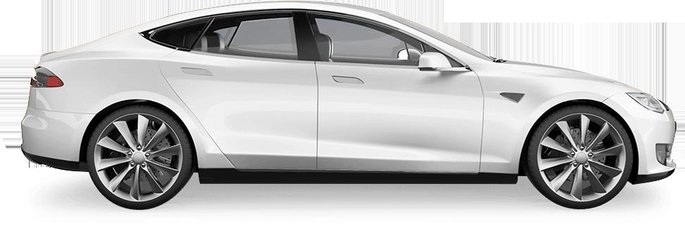
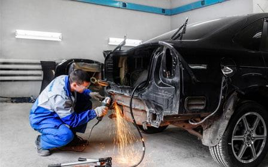
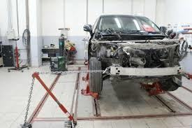
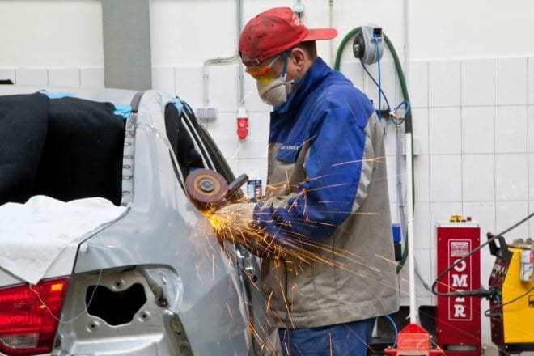
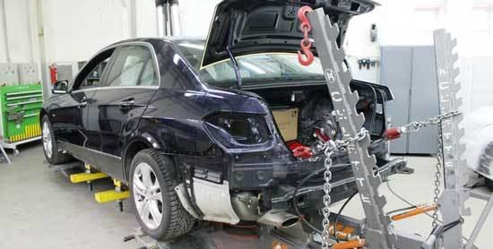
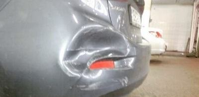
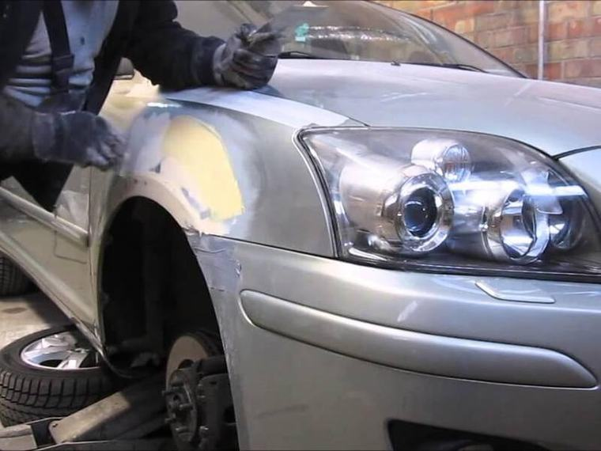
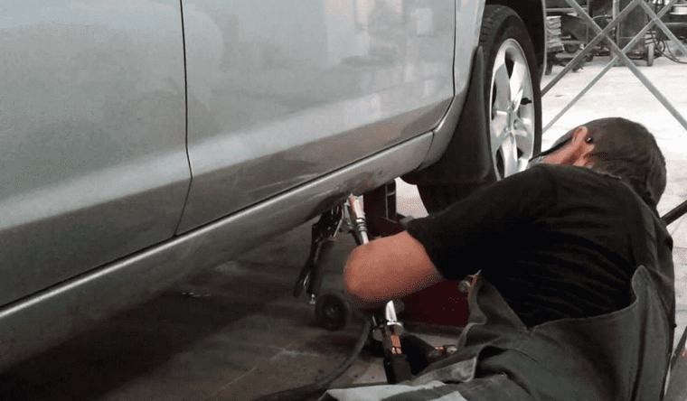
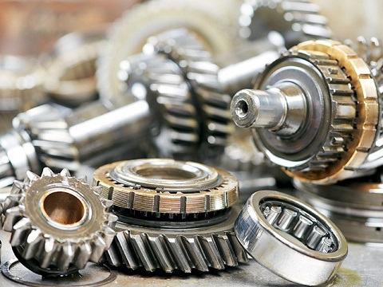

Кузовной ремонт и покраска а
Кузовной ремонт и покраска в Красноярске
Кузовной ремонт в Красноярске компания «АвтосервисПрофи» выполняет с помощью новейшего восстановительного оборудования, которое не так-то просто найти в нашем городе.
ежедневно совершенствуют свое мастерс
Наши услуги

Кузовной ремонтПлотное движение в городах и низкое качество дорожного полотна вызывают большое количество дорожно-транспортны…
Восстановление геометрииРазнообразие электронных систем безопасности, которые есть сегодня у каждого современного автомобиля, создает…
Ремонт после ДТПКузовной ремонт включает в себя целый перечень мероприятий по устранению дефектов и восстановлению целостности… Удаление вмятинПовреждения на кузове автомобиля могут быть в виде различных деформаций, в том числе и вмятин и царапин. Причи…
Удаление вмятинПовреждения на кузове автомобиля могут быть в виде различных деформаций, в том числе и вмятин и царапин. Причи…

Жестяные работыЖестяные работы (рихтовка) являются этапом кузовного ремонта и необходимы после дорожно-транспортных происшест… Сварка кузоваСварочные работы – необходимая процедура для восстановления целостности кузова в результате образования на нем…
Сварка кузоваСварочные работы – необходимая процедура для восстановления целостности кузова в результате образования на нем…
 Стапельные работыСтапельные работы – сложнейшая часть кузовного ремонта. Они требуются при серьезных повреждениях кузова с нару…
Стапельные работыСтапельные работы – сложнейшая часть кузовного ремонта. Они требуются при серьезных повреждениях кузова с нару…

БампераЦентр ремонта «АвтосервисПрофи» проводит ремонт, восстановление, покраску и замену бамперов.
КрылаРемонт крыла выполняют как после крупнейших дорожных аварий, так и в результате мелких повреждений, полученных… ДвериДовольно часто нашим водителям приходится приезжать в сервис, чтобы сделать ремонт дверей автомобиля. Дефекты…
ДвериДовольно часто нашим водителям приходится приезжать в сервис, чтобы сделать ремонт дверей автомобиля. Дефекты…
 КапотаВсегда приятно смотреть на ровное и гладкое покрытие автомобиля, не имеющее каких-либо дефектов. Но рано или п…
КапотаВсегда приятно смотреть на ровное и гладкое покрытие автомобиля, не имеющее каких-либо дефектов. Но рано или п…

ПороговПороги – важнейшие элементы кузова автомобиля, на которые приходится нагрузка по поддержанию ровной езды, а та…
Заказ запчастейЕсли ваш автомобиль сломался, любой ремонт начинается с поиска и подбора запчастей. Новые детали нужны также в… Замена кузовных деталейВ процессе управления автомобилем водители, попадая в небольшое ДТП, вынуждены проводить замены отдельных элем…
Замена кузовных деталейВ процессе управления автомобилем водители, попадая в небольшое ДТП, вынуждены проводить замены отдельных элем…